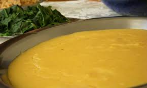

Delicias de Minas
Angu.

Ingredientes
• 2 litros de água fervendo
• 500g de fubá
PORÇÕES
Servir 15 pessoas
TEMPO DE PREPARO
60 minutos
Passo a Passo.
1. Dissolva o fubá num pouco de água fria, mexendo com colher de pau.
2. Junte a água fervendo e, mexendo sem parar, em fogo alto.
3. Quando a massa começar a grudar no fundo da panela, reduzir a chama e continuar a mexer até soltar do fundo da panela.
4. Molhe uma forma e coloque o angu.
5. Deixar esfriar um pouco e virá-lo numa travessa.